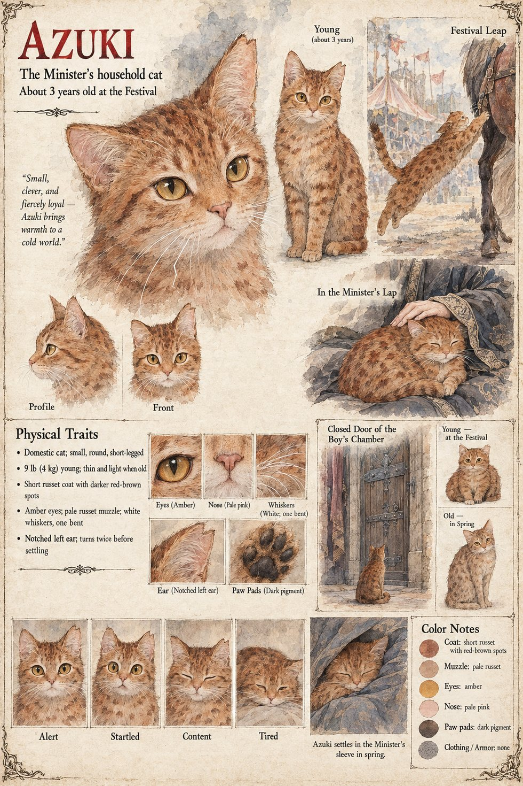

Azuki
The Minister of the Left's household cat · named for the red bean · a round young cat at the Festival
A small, round, russet-spotted cat, named for the red bean, who wandered into the Minister of the Left's compound one winter, has been fed from his grandson's plate ever since, and follows Kiyomaro, with the serene entitlement of her kind, to every place he is not strictly permitted to take her. Nobody has seen her smuggled into the Festival of the Small Bow; Kinji alone sees her slip from the basket of cushions under the awning's edge and cross the grass at a trot, tail up, intending nothing at all, toward the one pony in the meadow she knows by smell. She believes, as cats believe, that a moving thing is an invitation. She leaps for the saddlecloth, reaches the hock of Kurige, and the pony bolts. The histories, when at last they reach the matter, find her inconvenient and leave her out, at a cost of four thousand lives. When the boy dies she walks up the grass to the pavilion, climbs into the vacant lap of the Minister of the Left, turns twice, and settles. Nobody asks the cat.
She refuses her dinner for three days and sits before the closed door of the boy's chamber. On the night of the pyre the Minister warms her cushion against his own chest beneath his robe before setting it down, and she turns twice and lies in the place where the heat is. At Mikusa she is in the fold of his sleeve, and makes a small questioning sound as the captain turns back to the Stone; he had found her waiting at the gate at the hour of the Ox, and had not had the strength to say no. She grows old with him on Mikusa-yama, lean and light and stiff-jointed, her fur dull as a straw mat, following him from room to room with the unaccusing loyalty of an animal that has no theory of what has happened and no wish for one. In the Bureau's lower archive she climbs into the lap of the man on the floor, and he says, “Nobody asked you.” She dies in the spring, in his sleeve, which no one has the heart to take off the peg. The sheet's three years at the Festival, notched left ear, amber eyes and nine pounds are its own.
Appears In

Related Subjects


Related Records

A half-breath late to the starting line, Azuki has the pony's hock, Kurige bolts across the meadow with Kiyomaro in the saddle, and Tomobe no Higaide, forty paces off, begins to run.

On the night of the pyre Sugino no Arikuni warms the cold cushion against his chest beneath his robe before setting it down for Azuki, who has refused her dinner for three days; the steward Tamenaga waits inside the screen to ask whether the lamp may be lit.

At the grey of dawn on the twentieth of Garren, Tomobe no Higaide sets his left palm on the Stone of Mikusa and goes into it as pale grain, in the sight of Jōkei, his three senior priests and a Minister with Azuki curled in the fold of his sleeve.

In the lower archive of the Bureau of Inquiry Sugino no Arikuni, who has read the Examiner's eleven sheets twice, has slid from the stool to the floor with his forehead against the table, and Azuki, old and thin, comes into the lamplight to climb into his lap.